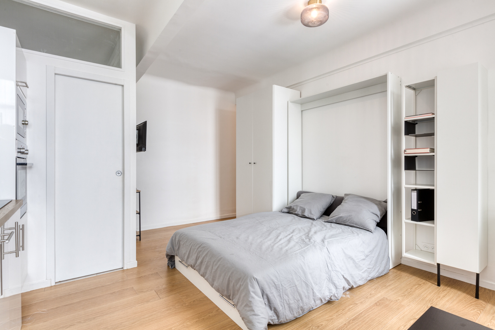
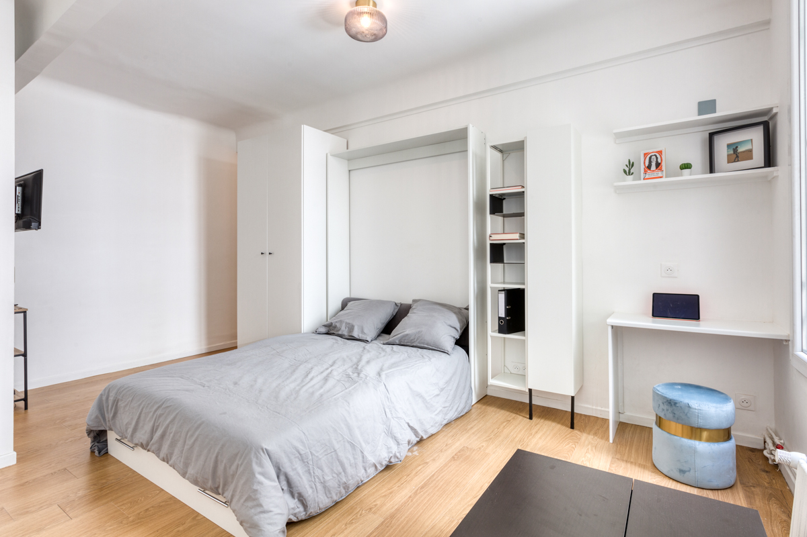
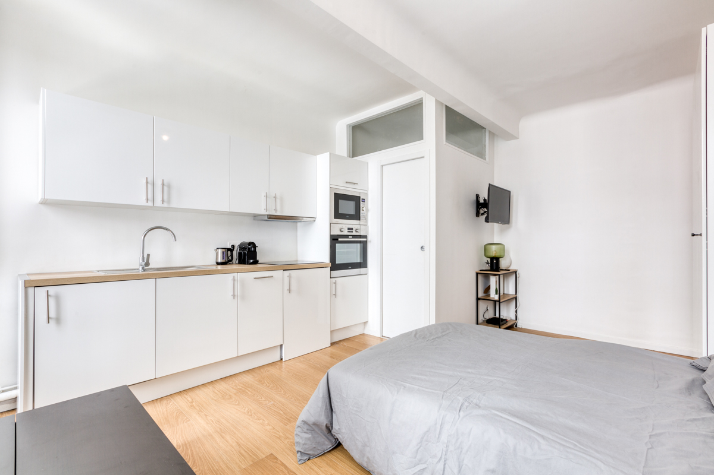
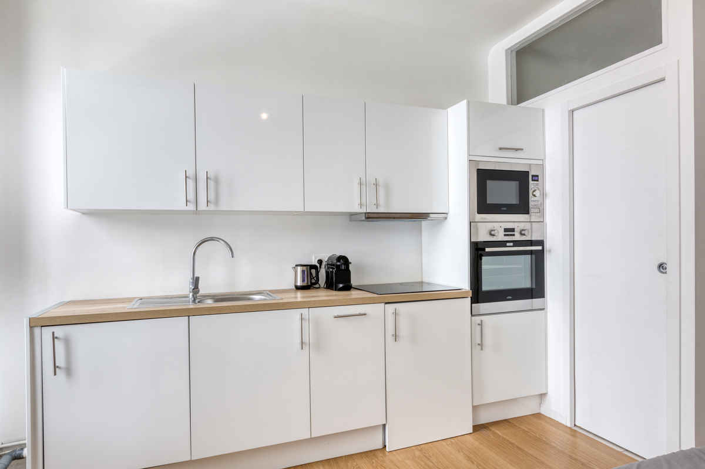
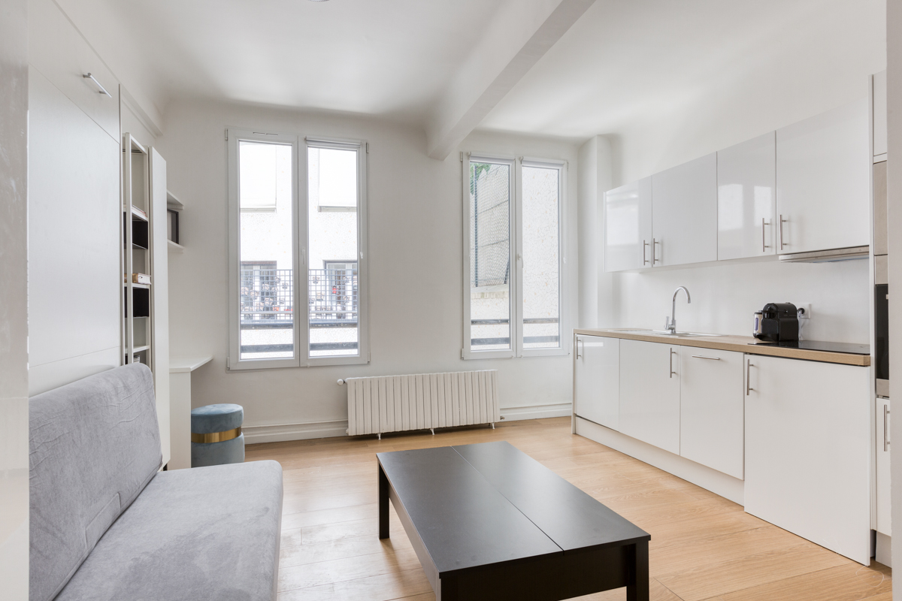
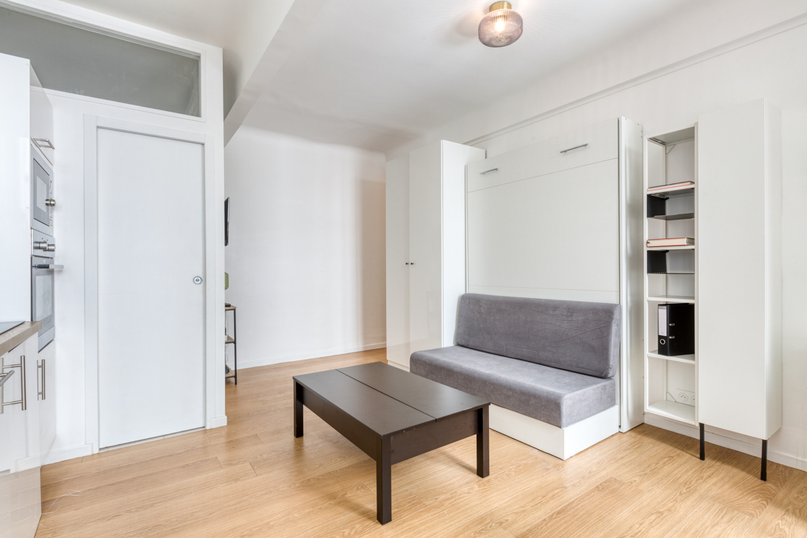
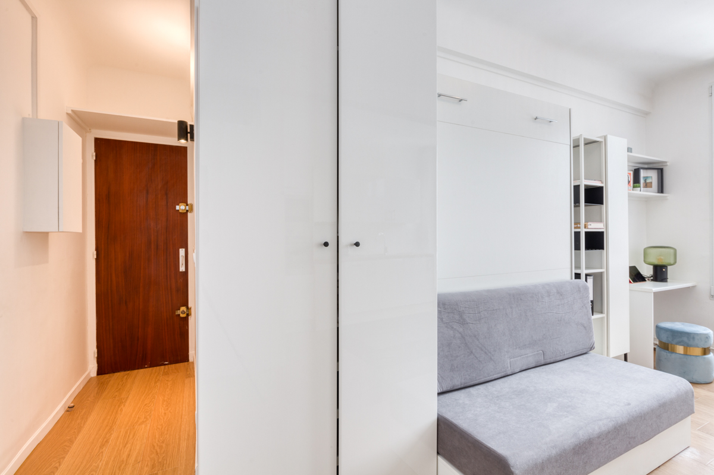
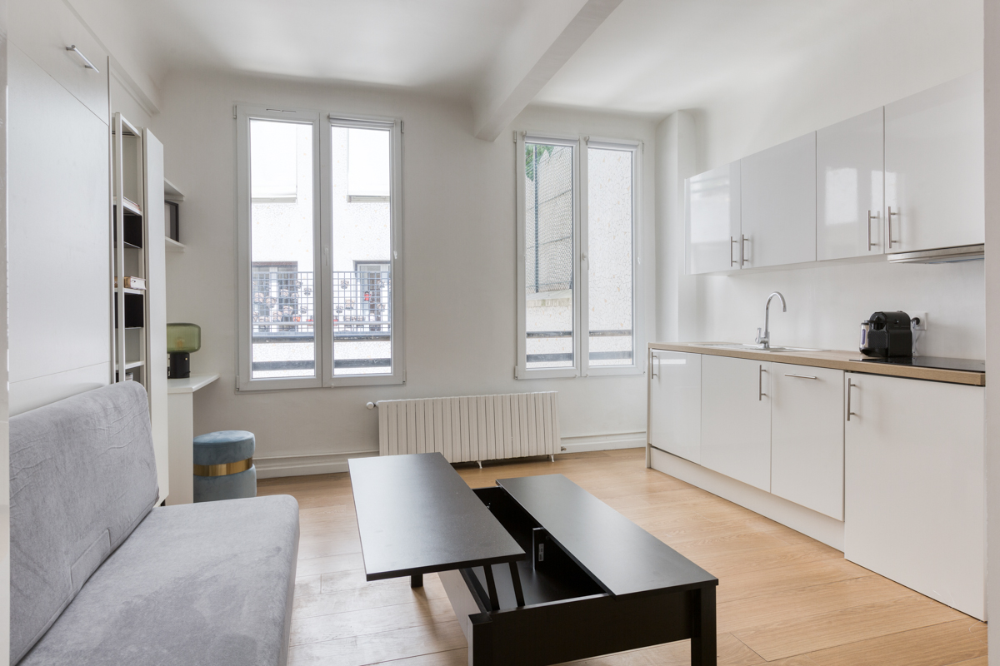

Paris · 16th arrondissement
A studio of quiet light
Avenue Paul Doumer — Passy · Trocadéro
Scroll
Avenue Paul Doumer — Passy · Trocadéro
 The Residence
The Residence
Tucked along the elegant Avenue Paul Doumer, this studio is a study in calm. Pale oak floors, a crisp white palette and generous windows let the daylight do the decorating. Every detail has been considered for a refined, effortless stay in one of the city's most sought-after addresses.
A bright open studio with a comfortable double bed, a relaxed lounge corner and a calm, uncluttered atmosphere.
A complete modern kitchen — oven, induction hob, fridge and Nespresso — alongside a contemporary walk-in shower room.
Steps from the Trocadéro gardens, Passy's village streets, museums and the métro — the very best of the 16th at your door.
A few frames of everyday life here. Click any image to view it full screen.












The photograph above is taken from the top of the building, simply to place the apartment within its surroundings. It captures the spirit of the address: the rooftops of Passy, the gardens of the Trocadéro and the museums of Chaillot, all within a short walk — with métro lines 6 and 9 just nearby.
For availability and any questions, get in touch directly. We would be delighted to tell you more about the apartment.